설치 파일을 준 곳이 확실한가요? 문자·카톡 링크로 온 모르는 APK, “앱 하나만 깔아 주세요”라는 전화 안내는 보이스피싱 수법입니다. 출처가 확실하지 않으면 여기서 멈추세요.
0보안 위험 자동 차단 잠시 끄기
One UI 6.1.1 이상으로 출시된 갤럭시는 보안 위험 자동 차단이 기본으로 켜져 있습니다. 켜져 있으면 Play 스토어·Galaxy Store 밖에서 받은 앱이 설치되지 않습니다. 3단계의 ‘출처 허용’ 스위치도 회색으로 잠깁니다.
- 설정 앱을 엽니다.
- 보안 및 개인정보 보호를 누릅니다.
- 보안 위험 자동 차단 스위치를 끕니다. 화면 잠금 PIN·지문 확인을 요구합니다.
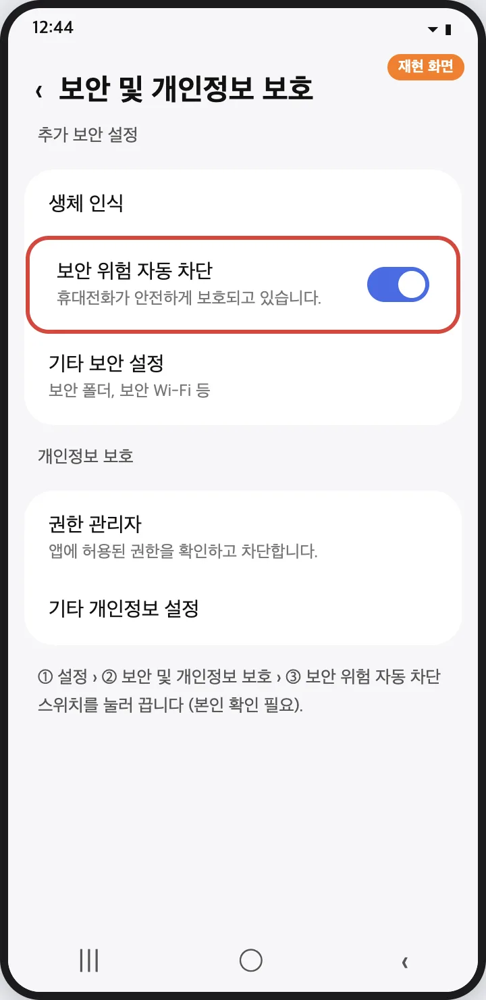
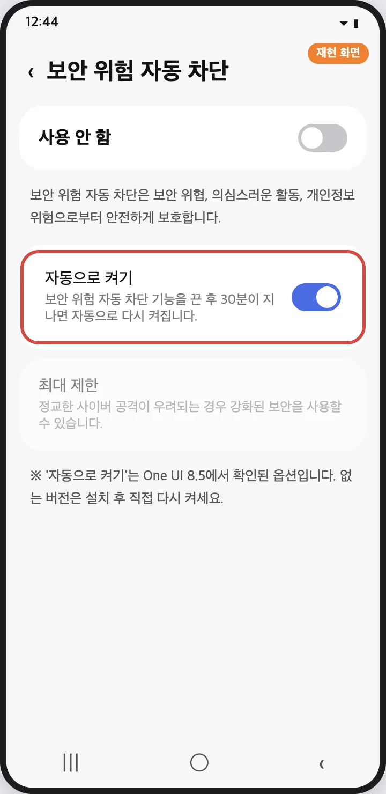
1APK 다운로드
- 배포처가 알려준 주소를 Chrome 또는 삼성 인터넷으로 엽니다.
- APK 다운로드 버튼을 누릅니다.
- “이 유형의 파일은 기기에 손상을 줄 수 있습니다” 경고가 뜨면 다운로드를 누릅니다.
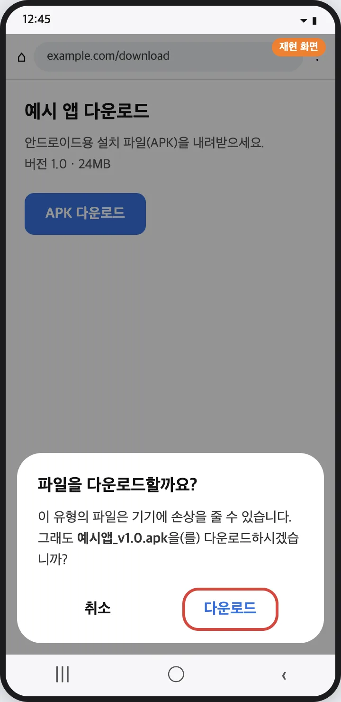
2다운로드한 파일 열기
방법 A. 바로 열기: 다운로드가 끝나면 화면 아래 안내에서 열기를 누릅니다.
방법 B. 내 파일에서 열기: 안내를 놓쳤다면 내 파일 앱 → 다운로드에서 .apk 파일을 누릅니다.
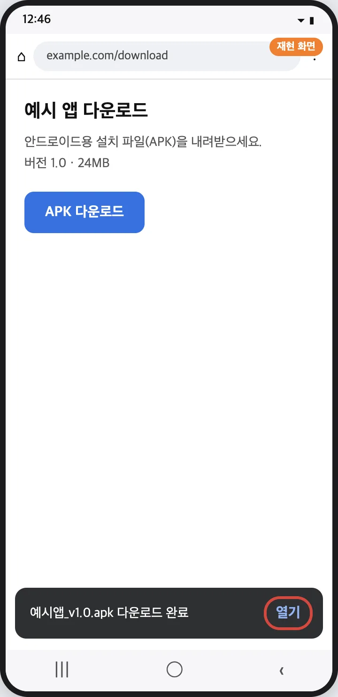
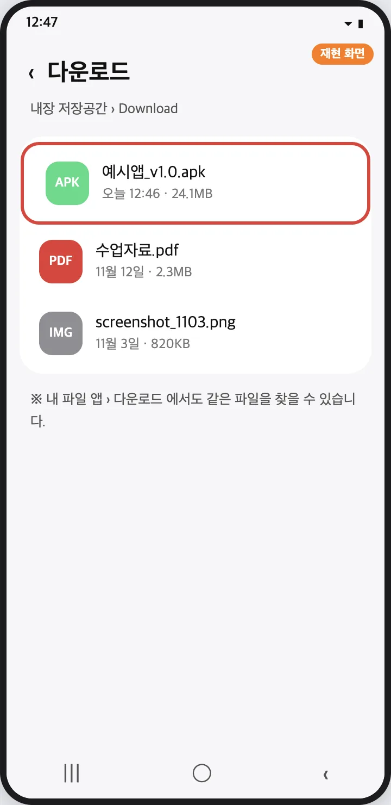
3‘이 출처 허용’ 켜기
처음 설치하면 “보안상의 이유로 현재 이 출처의 알 수 없는 앱을 휴대전화에 설치할 수 없습니다” 안내가 뜹니다.
- 설정을 누릅니다.
- 이 출처 허용 스위치를 켭니다. 버전에 따라 이름이 권한 허용일 수 있습니다.
- 뒤로 가기(‹)를 누르면 설치 화면으로 돌아갑니다.
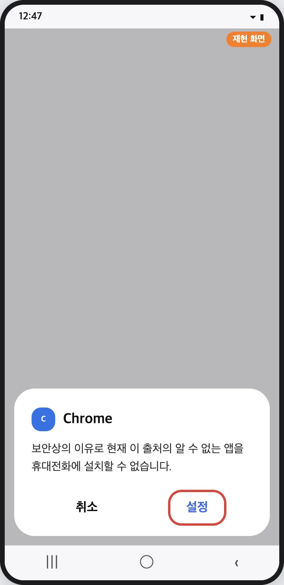
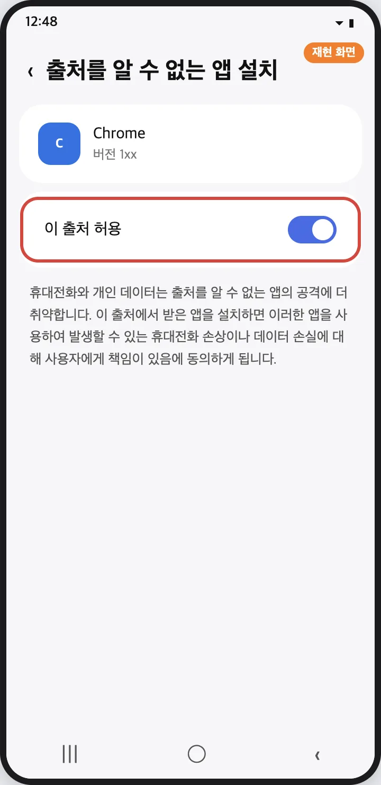
일부 버전: 설정 → 보안 및 개인정보 보호 → 기타 보안 설정 → 출처를 알 수 없는 앱 설치. 설정 검색창에 “출처”를 입력해도 찾을 수 있습니다.
4설치
“이 앱을 설치하시겠습니까?”가 뜨면 설치를 누릅니다.
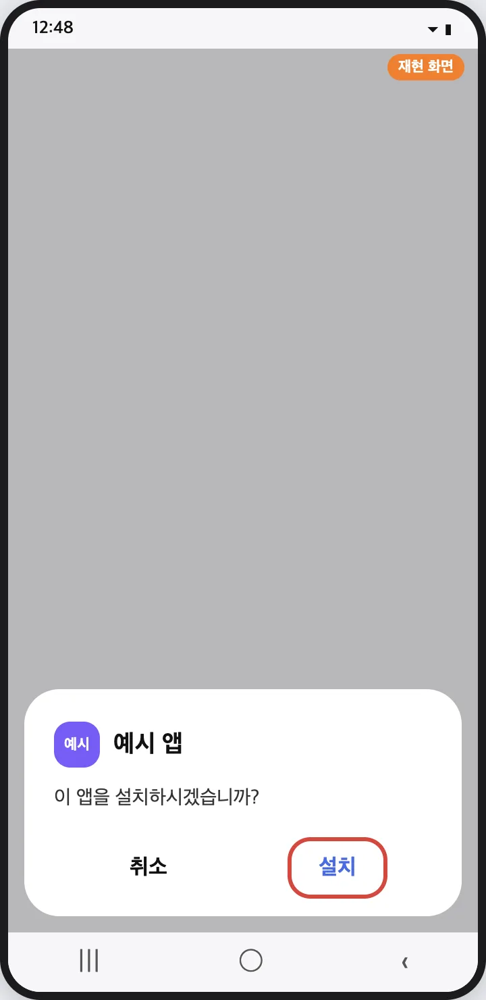
5Play 프로텍트 경고가 뜰 때
| 경고 | 어떻게 할까 |
|---|---|
| 앱 검사 권유 | 앱 검사를 누르세요. 안전 확인이 한 번 더 됩니다. |
| 앱 설치가 권장되지 않음 / 안전하지 않은 앱 차단됨 (확인되지 않은 개발자) | 배포처가 확실할 때만 세부정보 더보기 → 무시하고 설치. 그냥 ‘확인’을 누르면 설치되지 않습니다. |
| 유해한 앱 차단됨 (멀웨어 감지) | 설치하지 말고 파일을 삭제하세요. |
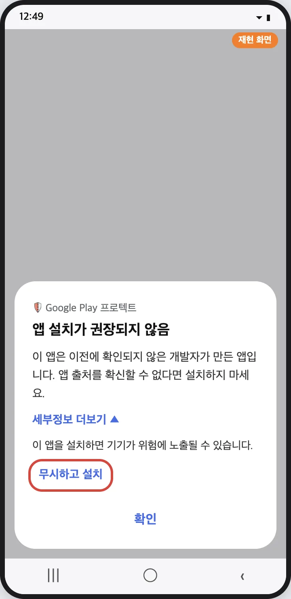
6설치 완료
“앱이 설치되었습니다”가 뜨면 열기를 누릅니다. 처음 실행할 때 권한을 물으면 필요한 것만 허용하세요.
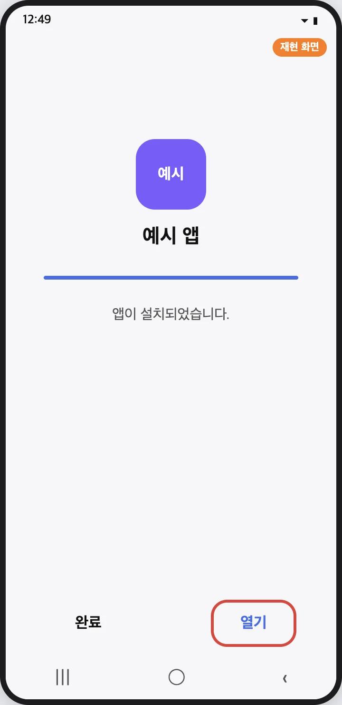
7원상복구 (꼭 하세요)
- 이 출처 허용 끄기: 설정 → 애플리케이션 → ⋮ → 특별한 접근 → 출처를 알 수 없는 앱 설치에서 3단계에 켰던 앱의 스위치를 끕니다.
- 보안 위험 자동 차단 다시 켜기: 설정 → 보안 및 개인정보 보호 → 보안 위험 자동 차단을 켭니다.
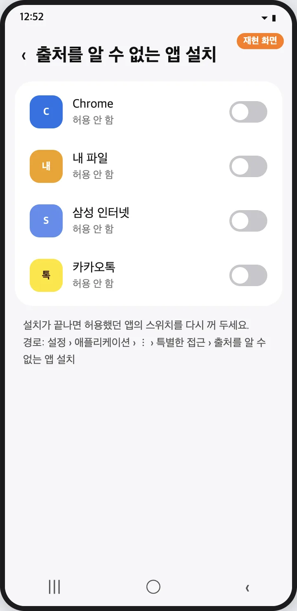
문제 해결
“출처를 알 수 없는 앱 차단됨” 팝업이 떠요
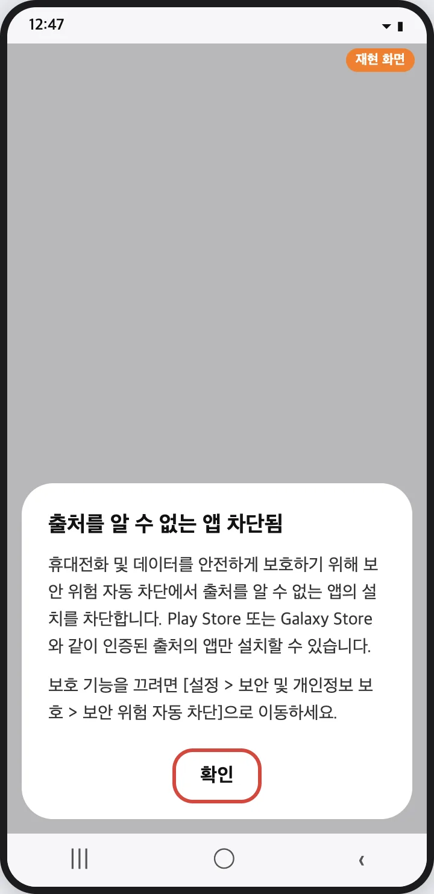
보안 위험 자동 차단이 켜져 있다는 뜻입니다. 확인을 누르고 0단계로 돌아가 자동 차단을 끈 뒤 APK를 다시 엽니다.
‘이 출처 허용’ 스위치가 회색이라 눌리지 않아요
역시 보안 위험 자동 차단 때문입니다. 0단계를 먼저 하세요.
“앱이 설치되지 않았습니다”가 떠요
- 같은 앱의 다른 서명 버전이 이미 깔려 있으면 기존 앱을 삭제하고 다시 설치합니다. 앱 데이터도 지워지니 주의하세요.
- 파일이 다 받아지지 않았을 수 있습니다. 다시 받아 보세요.
- 너무 오래된 Android용으로 만든 앱은 최신 갤럭시에서 설치가 막힙니다. 배포처에 최신 빌드를 요청하세요.
- 저장공간이 부족한지 확인하세요.
APK를 눌러도 아무 반응이 없어요 (One UI 8.5 일부 사례)
- 휴대폰을 재부팅한 뒤 내 파일 앱에서 다시 엽니다.
- 그래도 안 되면 삼성 멤버스 → 도움받기 → 질문/오류 보내기 → 오류 보내기에서 ‘시스템 로그 데이터 보내기’를 체크하고 증상을 보내세요.
접근성 권한이 “제한된 설정”이라 켜지지 않아요
Android 13부터 APK로 설치한 앱은 접근성·알림 접근 권한이 기본으로 막힙니다.
업무상 꼭 필요하고 출처가 확실할 때만: 설정 → 애플리케이션 → 해당 앱 → ⋮ → 제한된 설정 허용.
보안 체크리스트
- 배포처(회사·강사·개발자)를 직접 확인했다.
- 같은 앱이 Play 스토어·Galaxy Store에 있다면 스토어에서 설치했다.
- 앱이 요구하는 권한이 기능과 맞다. 예를 들어 계산기 앱이 문자·연락처를 요구하면 의심합니다.
- Play 프로텍트가 ‘유해한 앱’이라고 하면 설치하지 않았다.
- 설치 후 ‘이 출처 허용’을 끄고 ‘보안 위험 자동 차단’을 다시 켰다.
화면 이미지와 참고 자료
이 페이지의 화면 그림은 모두 재현 화면입니다. 공식 안내와 실사용 사례의 화면 문구를 바탕으로 One UI 스타일로 다시 그렸으며, 실제 기기 캡처가 아닙니다.